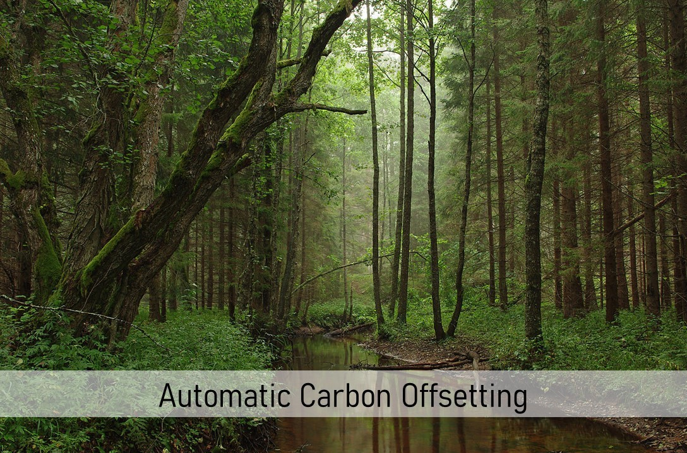

Automatic Carbon Offsetting¶
{kind=link}
About¶
Researchers in the environmental social sciences, broadly construed, are increasingly studying behavior in paradigms with actual environmental consequences. While studying people’s willingness to invest in environmental public goods, many experimentalists rely on emission certificate markets to purchase and retire certificates to limit the caps in cap-and-trade regulated markets. Thereby, experimental decisions trigger actual environmental consequences.
Our software-module helps researchers using oTree to automate the process of purchasing and retiring emission certificates in experiments. When an experiment is finished, researchers receive an email and are directed to a customized donation form of Compensators.org, a platform facilitating the purchase and retirement of certificates. The tool helps researchers to purchase emission certificates with minimal effort, thereby reducing the entry cost for conducting experiments with environmental consequences.
This website provides simple step by step instructions that show researchers how to integrate the software module in their oTree projects.
Support¶
For help, please contact sebastian.berger@iop.unibe.ch testtesttest